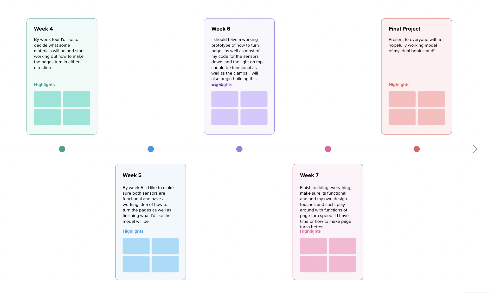

<div class="textcontainer">
<p class="margin"></p>
<h3>Final Project: </h3>
<p class = "margin"></p>
My final project will be my ideal book stand. I love reading books, especially when I'm eating, but I always get the pages dirty and have difficulty turning the page while I dig into my meal, so I would like to create a bookstand that automatically turns the pages for me when I wave my right hand in front of one sensor. There will be two sensors so I can turn forwards and backwards. My bookstand will also be able to detect a consistent presence in front of the sensor that will tell it to turn several pages at a speed of which I will determine. Other components are that it will hold the book, a rechargeable light, the angle of the stand will be adjustable, and clamps for the book to stay in place. My goals for this project is to figure out how to turn pages with mechanics and program sensors to be extremely precise.
<p class = "margin"></p>
<p class = "margin"></p>

<p class = "margin"></p>
Above is a timeline of what I'd like to accomplish in the next weeks. The bill of materials I'm thinking of using right now is:
Ultrasonic sensors (2), undecided material for stand, most likely acrylic, a DC motor, led lights (3-5), 3D printed holders for sensors.
<p class = "margin"></p>
<p class = "margin"></p>
</div>